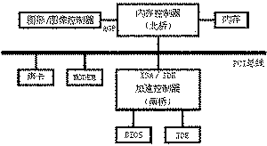
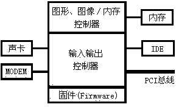
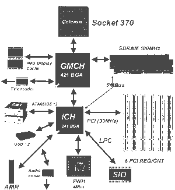
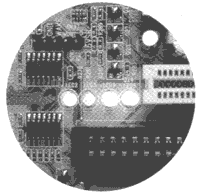
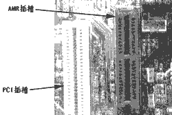

|
|
| 当前位置：电脑报电子版 > 1999 年> 31 期 > 硬件周刊 > 板上乾坤——主板技术的发展 |
| 《 板上乾坤——主板技术的发展 》 |
| 在面临世纪之交的1999年，PⅢ、K7、K6－Ⅲ、赛扬等新型高频CPU和PC100、PC133等高速内存的出现，向主板制造技术提出了更高的要求。1999年，主板芯片组厂商和主板厂商们在进一步改良主板架构、提高芯片组性能的同时，还在主板功能扩展、稳定性、易用性等方面下了很大的功夫，积极探索技术上的突破，研制出了不少具有特色的产品，使主板技术发展到了一个新的阶段。 纵观1999年的各款新型主板，用一句话来描述就是：功能更“多”、速度更“快”、 性能更“好”、价格更“省”。功能“多”和价格“省”主要是芯片组“整合”带来的。 一、芯片组更新 1998年，虽然主板技术取得了重要的突破，将系统外频从66MHz提高至100MHz，但仍为1999年主板芯片组留下了诸多应改进之处，1999年主板芯片组受到来自各方面的压力，技术更新迫在眉捷，原因至少有四： ·100MHz总线已不能满足高速发展的CPU的需要，更高外频的CPU面世只是时间问题，实际上目前已有不少CPU已能运行于133MHz甚至更高外频； ·100MHz总线无法满足目前已出现的高速新型内存的要求； ·AGP 4×要求内存数据交换率至少达到1000MB/s，而目前100MHz总线内存最大数据交换率仅为800MB/s，外频至少应提高至133MHz方能满足AGP 4×的要求； ·到目前为止，除VIA的部分芯片组和82810 DC－100芯片组以外，大多芯片组不支持Ultra DMA 66。 基于上述原因，芯片组必须更新，外频至少需要提高到133MHz，并提供对Ultra DMA 66的支持。 芯片组厂商不负众望，在今年作了新的贡献，让我们先看看’99之芯片组。 1．终结者440BX 440BX芯片组自1998年4月出台以后，携100MHz的“前部总线” 和AGP 2×之声威，一直占领着高端主板市场。由于其面世早，各主板厂商对其功能作出了尽善尽美的开发， 440BX芯片组的性能已发挥到了极限。 但如前所述，由于440BX芯片组还存在诸多缺陷，随着133MHz外频主板芯片组的面世，Intel 82810、82820芯片组崭新的集线器架构对传统总线的挑战，440BX芯片组的辉煌将终结于二十世纪。 2．新面孔440ZX Intel于今年年初推出了 440ZX芯片组（分为支持100MHz外频的440ZX－100和支持66MHz外频的440ZX－66两种版本），其主要用意是配合Socket 370结构的新Celeron系列CPU，夺回已丢失的低端市场。440ZX芯片组主板在不降低系统性能的前题下，在提高性价比方面狠下功夫，这类主板一般只有2个DIMM插槽(最大只支持256MB内存)、3个PCI和1个ISA插槽，支持集成i740图形加速芯片和声音芯片，以大幅度降低成本。 3．崭新面貌828X0 ’99主板芯片组最大的技术进步首推Intel的82810和82820芯片组，虽然Intel 82820被推迟到1999年第三季度才能发表。但现在大量面世的82810芯片组主板已使我们看到了曙光，Intel 82810和82820芯片组主要采用了以下新技术： 1）加速集线器架构 在82810和82820芯片组中采用了集线器的概念，各种设备通过集线器直接与CPU、内存交换信息。在传统芯片组的PCI总线型主板中，挂在南桥芯片上的IDE、ISA、BIOS、USB以及挂在PCI插槽上的显示卡、声卡、MODEM等各种设备均需通过PCI总线和北桥芯片才能与CPU、内存交换信息（如图1），在CPU、内存以及各种外设速度日益提高的今天，传统PCI总线是阻碍系统速度提高的瓶颈。将AGP显示接口挂在北桥芯片上，摆脱PCI总线的限制，速度达到AGP 2×（528MB/s）就是一最明显的改进。 Intel 82810 芯片组采用了图形存储控制集线器82810GMCH、输入输出控制集线器82801ICH、固件集线器82802FWH三块芯片，声卡、MODEM、IDE、内存、AGP、PCI等设备呈星形结构直接通过集线器交换信息，不像原来诸多设备共同占用总线带宽，使整个系统速度提高很多（如图2、图3）。且由于各设备用其通道交换数据，相互之间的干扰也会减小。 2）正式的133MHz外频 虽然当前很多使用440BX芯片组的主板提供有133MHz甚至更高的外频，但实际上是在超频芯片组。目前810家族的最高版本82810 －E和行将出世的82820芯片组正式提供对133MHz外频的支持，133MHz外频给我们带来的最大的好处是AGP 4×，目前100MHz总线频率时内存的最大数据交换率为800MB/s，还无法满足AGP 4×的要求，采用133MHz外频时内存的数据交换率达到1000MB/s，基本能满足AGP 4×的需要。 3）支持新型内存 Intel 820芯片组将支持184线的RIMM（Rambus In－Line Memory Moclule）内存条，RIMM内存条采用DR－DRAM（Direct Rambus DRAM）内存芯片，可在200MHz的总线频率下运行，比SDRAM的带宽提高了3倍多。Intel820芯片组通过桥接电路还可以使用PC133 SDRAM。 4）整合技术 Intel 810芯片组的整合性相当高，AGP显卡、音效CODEC控制器、MODEM CODEC控制器全部整合，去掉了AGP插槽，代之以一只短短的AMR的扩展槽，它可为MODEM提供接口，并可作为声卡升级之用。而目前Intel 810DC100芯片组的内置AGP显卡配备了4MB SDRAM，只要配合PⅡ、PⅢ等CPU运行，就可得到较完美的性能，该内置AGP显卡的性能经测试表明，完全可以满足一般用户的图形显示要求。但810芯片组整合的显示功能档次还不够高，无法满足高端图形的应用和游戏需求。 业已面世的Intel 82810芯片组虽然采用了很多新技术，但从实质上来说还是Intel 82820芯片组出生前的低价替代型产品，本身还存在一些缺陷，如整合的显示功能无法满足高端图形应用的需要、与PⅢ处理器结合时可能导致死机等等。客观地说，新产品面世时的确会出现这样那样的问题，但Intel 82810芯片组中使用的崭新技术意味着又一主板新时代的来临，我们满怀希望，迎接Intel 82820芯片组的到来。 4．先声夺人Apollo Pro 133 ’99业界的最大振撼来自VIA的PC133规范及同时推出的Apollo Pro 133芯片组，目前已有众多的主板厂商开始生产采用VIA Apollo Pro 133芯片组的主板。Apollo Pro 133芯片组的几个特殊性能领先于Intel现有的440BX及82810芯片组，这一招给了龙头老大Intel沉重的一击，借口VIA的PC133芯片组不在Slot1的授权范围之内状告VIA ，想阻碍Apollo Pro 133芯片组主板出台。让我们来看看它为什么使Intel感到惊惶。 Apollo Pro 133相对440BX有如下特点： 1）VIA Apollo Pro 133芯片组是最早的正式支持133MHz外频的芯片组； 2）VIA Apollo Pro系列芯片组是最早的正式支持Ultra DMA 66的芯片组； 3）VIA Apollo Pro 133芯片组是最早的正式支持PC133 SDRAM的芯片组（不支持Intel的DR－DRAM内存模组）。 Apollo Pro 133是非常适合当前的133MHz外频的主板芯片组，VIA先声夺人，领先Intel带领我们快步进入PC 133的时代。’99之兼容芯片组厂家VIA、SIS、ALI还有几款不错的芯片组，但这些芯片组与上述芯片组相比，除整合技术提高以外，无太大的特色，本文从略。 二、芯片组的“整合技术” 与1998年相比，1999年主板芯片组的最大共通特色是全部使用了“整合技术”，所谓“整合技术”就是将板卡或其它部件的功能，如显示卡、声卡、MODEM、ATA－66/33硬盘等支持功能整合于芯片组中，进一步加强了芯片组的功能。整合技术虽然使芯片组的成本略有提高，但由于芯片组及其整合功能在一条流水线上一气呵成，从而降低了计算机的整体成本。 “整合技术”的优点一是性价比高；二是缩小了整机的体积；三是由于系统功能均整合在主板芯片组中，只需升级CPU即可提升系统的整体性能。整合芯片组是芯片组厂商抢夺低价电脑市场和笔记本电脑市场采取的重要策略。“整合技术” 的缺点一是整合的声卡、MODEM会较多地占用CPU资源，二是整合的AGP显示性能不高且无法升级，故整合芯片组主要面向用户较多的中低端市场。 需要说明的是，整合芯片组主板与All－In－One主板有较大差别，All－In－One主板是将功能芯片安装于主板上，而整合芯片组主板是将芯片功能集成于芯片组之中，显然性价比较All－In－One主板为高。 三、主板的新技术 1．增强型免跳线设置技术 时至1999年，大多新主板都采用了免跳线BIOS，并给出了精细的调整方案、调高电压保护措施、设置错误保护措施等等。 ’99增强型免跳线设置技术主要体现在智能性的提高，如在微星6199主板提供的系统监控软件PC Alert Ⅲ，能在Windows 9.X中调整系统外频，连进入BIOS也省去了。一些主板能线性的以1MHz为单位调整系统外频，使系统性能发挥到极限。 2．完善的硬件监控技术 ’99新主板的硬件监控功能更加趋于完善，除具有电源电压、风扇转速、CPU温度、环境温度等安全监控功能外，还增加了很多监控功能，如CMOS电池电压不足是主板的常见故障，有些主板BIOS中提供了CMOS电池电压检测功能，在CMOS电池电压不足时提示用户更换电池。 微星、升技等主板还附送有“热敏电阻温控线”，能配合Windows9.X系统下的相关软件，监控除CPU以外的第二硬件设备，如显示卡芯片的温度，进一步完善了安保工作。 3．新颖的故障检测技术 在微星6199主板PCI插槽前沿，出现了四只红绿双色故障诊断LED指示灯（如图4），能表达16种状态，说明书中提供相应故障说明，出现何种故障一目了然。这种新颖的故障检测技术将会进一步发展，并深得广大DIYer的欢迎，甚至一窍不通的用户都能根据指示灯的状态与厂商通过电话、E－MAIL联系，寻求排障解决方案。 4．廉价双赛扬技术 从440LX、440BX开始，芯片组就支持多处理器。价格昂贵的Pentium处理器系统，一般只应用于服务器，而廉价的赛扬处理器，为一般用户使用双CPU系统带来了希望。 先是DIY爱好者，通过改造赛扬电路板针脚的电压实现双赛扬；随后是微星、华硕等厂商推出特殊的Slot1－S370转接卡，用其上的跳线来实现双赛扬安装；升技BP6主板直接做了两只Socket 370CPU插座；QDI推出的双Socket 370的转接卡在普通Slot 1主板就能使用双赛扬（必须使用QDI主板）。虽然廉价双赛扬系统，目前只能在Windows NT、UNIX等支持多CPU的系统才能发挥作用，但随着Windows2000的到来，这种性价比极高的配置会在市场上占有一席之地。 5进步的防病毒技术 1999年4月26日的“CIH大劫难”，使很多电脑的主板BIOS、硬盘惨遭清洗，引起了主板厂商的注意，迅速推出了一系列的主板防病毒措施。针对CIH病毒，如华硕、微星、钻石等主板在BIOS中加入了“BIOS”写保护功能，有些主板BIOS中固化反CIH病毒功能。技嘉6BX2000主板还采用双BIOS芯片技术，平时用主BIOS引导系统，一旦主BIOS遭到病毒破坏或升级失败时，第二块BIOS就会自动接过系统的引导权，使用户可以修复主BIOS。此外大多主板还在配套光盘中附赠防、杀病毒软件，对系统安全也起到了一定的保护作用。 6增强型ACPI技术 电源管理规范ACPI功能虽早已实施，不过，其真正意义上的发挥还在于STR技术的出现，所谓STR（Suspend to RAM）即“挂起到内存”，具体说是关机时将系统运行的当前状态和相关系统信息保存到内存中。挂起后系统耗能极小，再次开机时可省去大量的系统自检和启动时间，在10秒左右就能迅速地恢复到关机前的状态。 四、主板设计及布局的变化 ’99主板产品的设计及布局也发生了不少变化，从省材、方便、易用、抗干扰等方面下了不少功夫，主要特征有： 1．面积缩小：由于主板集成度提高、ISA槽消亡，ATX主板开始向小型化方向发展，有些主板纵向长度已小于20cm；有些整合芯片组主板的扩展槽已减少至四只，使主板扩展槽一侧的横向宽度也相应缩小。 2．彩色接口标识：根据PC99认证规定，主板的设计必须要具有人性化，主板的集成接口采用了彩色标识，连接外设时一目了然，连内置声卡的插孔也不例外，第二IDE接口变为白色，很容易与第一IDE接口区别。 3．可伸缩的Slot 1支架：’99主板Slot 1接口上大多使用了可伸缩的Slot 1支架，比原来的固定架安装更为方便。支架自身带了CPU卡口，以保证CPU与插槽接触良好。 4．跳线减少：由于免跳线技术使大多系统状态设定均置入BIOS中，主板上的跳线大为减少。 5．板载蜂鸣器：有些主板用板载蜂鸣器，免去了PC喇叭，减少了连线。 6．ISA插槽减少：’99主板布局设备的又一特征是ISA插槽逐步减少，根据PC99规范，主板上应当没有ISA插槽，但由于很多用户手中还有不少ISA接口卡，主板厂商还保留有较少的ISA槽。 7．使用AMR (Audio/MODEM Riser，声音/调制解调器插卡)插槽：在有的主板上采用了一只AMR插槽（如图5），插上AMR MODEM接口卡即可实现MODEM功能，价格远较普通MODEM便宜。 此外，今年还推出了几款性能较高的一体化主板，如台湾POWERCOLOR发布高性能All－In－One主板，采用440BX芯片组，集成有高性能Riva TNT显示芯片（配16MB显存），采用性价比较高的YAMAHA YMF 724。比单独购买BX主板、TNT、724卡会便宜很多。不过，其主要销售对象游戏玩家，可能不喜欢这种设计。 回眸’99，主板技术最重要的突破是新型集线器架构芯片组的推出、总线速度的进一步提高和芯片组整合技术的发展。 展望未来，我们从Intel的828X0芯片组上看到了曙光。2000年的未来芯片组可能会将828X0芯片组三只集线器合三为一，省去它们之间的桥接电路，以中央集线器的形式指挥并调度各路设备，完成计算机的所有功能。也就是说，控制芯片组将成为电脑的“控制中心”和“几何中心”，CPU、媒体处理器等只是控制芯片组的具有运算、处理功能之部件。 （重庆 周新） |
| 下载本期推荐软件 | 页 首 |
| 《电脑报》版权所有，电脑报网站编辑部设计制作发布 |